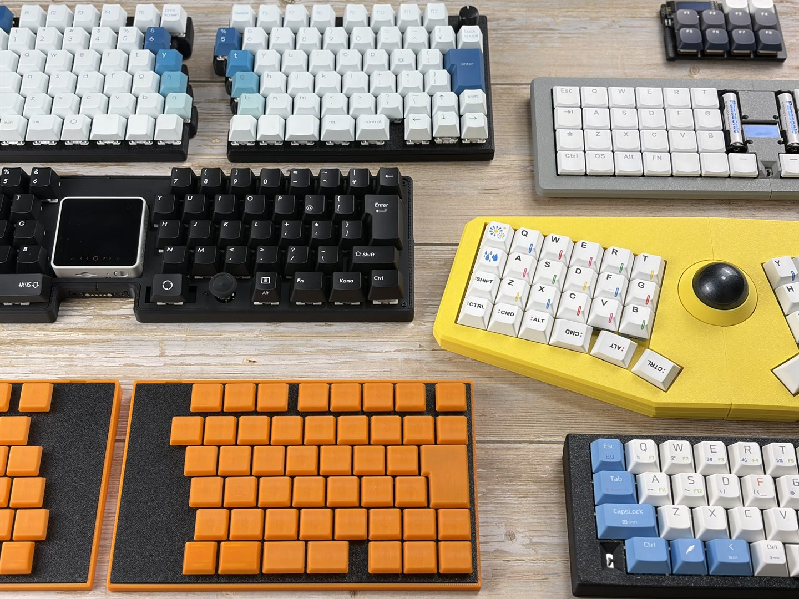
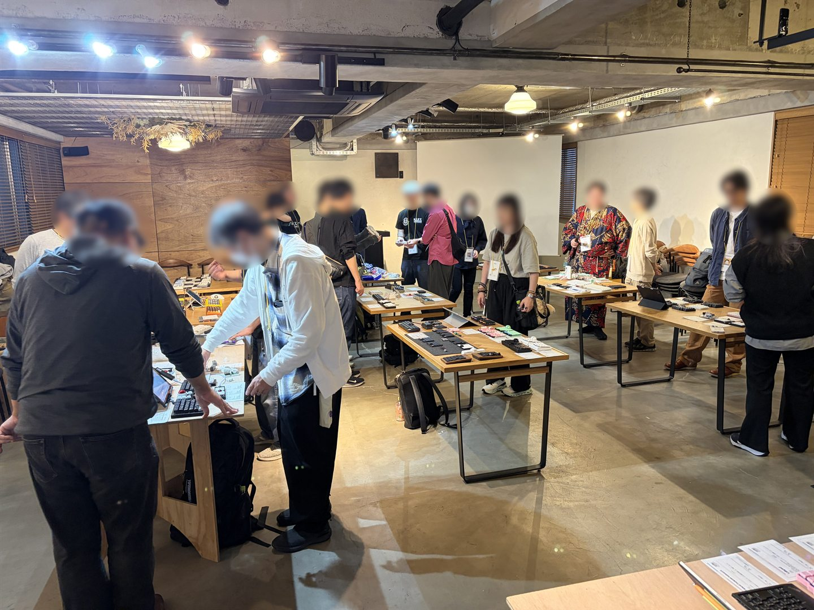
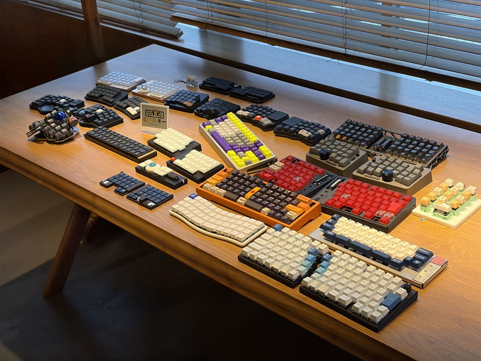
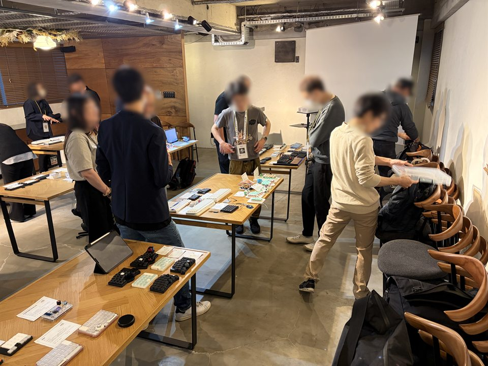

見て、触れて、
語り合う。
ながれキーは千葉県の我孫子駅前を中心に開催される、20〜30人ほどの小さな自作キーボード交流会です。
お気に入りのキーボードを持ち寄り、試打や情報交換を楽しめます。初めての方も大歓迎です。キーボードをお持ちでない方には、手ぶら参加枠もあります。



次回のながれキー
日程・会場・参加枠はconnpassでご確認ください。

ながれキーは千葉県の我孫子駅前を中心に開催される、20〜30人ほどの小さな自作キーボード交流会です。
お気に入りのキーボードを持ち寄り、試打や情報交換を楽しめます。初めての方も大歓迎です。キーボードをお持ちでない方には、手ぶら参加枠もあります。



日程・会場・参加枠はconnpassでご確認ください。